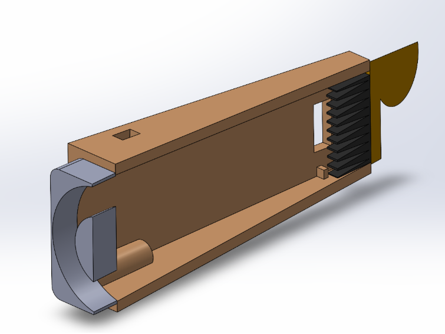
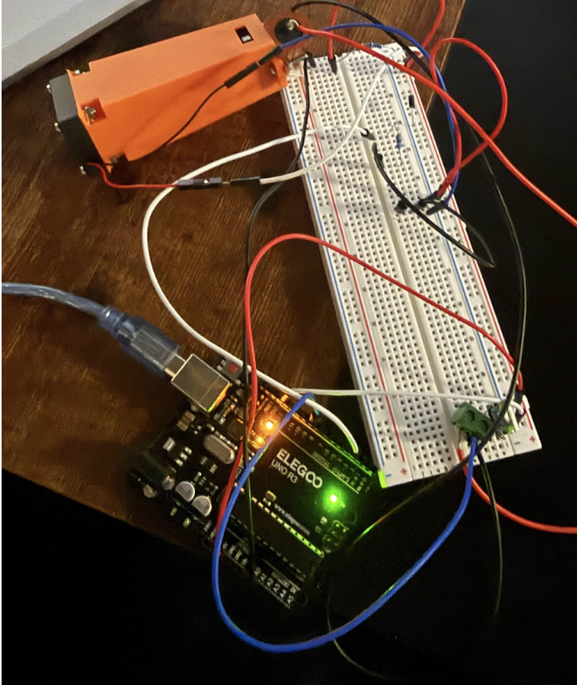
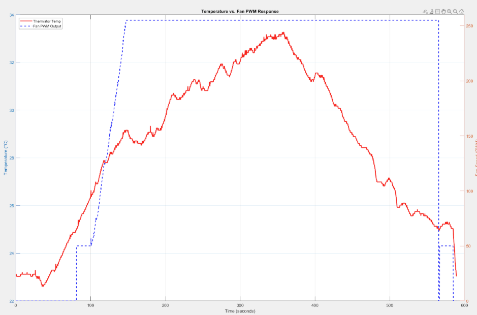
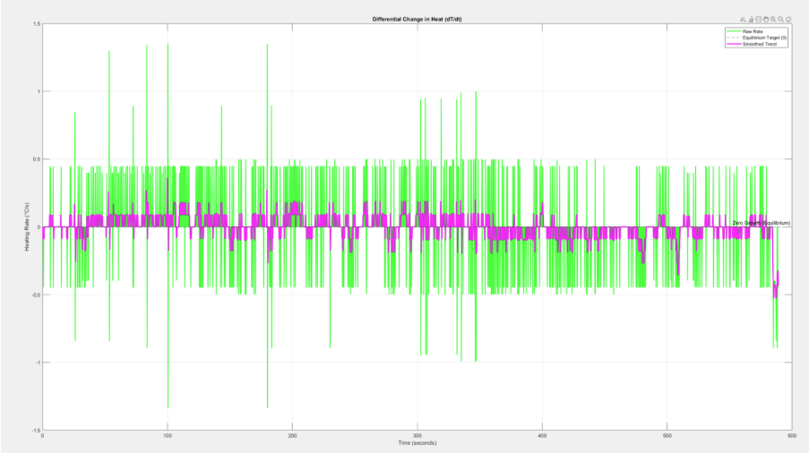
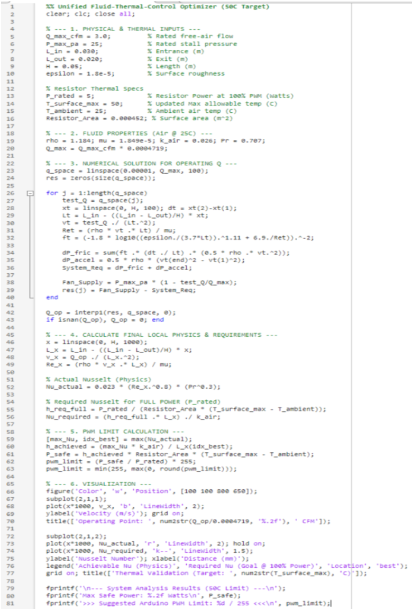
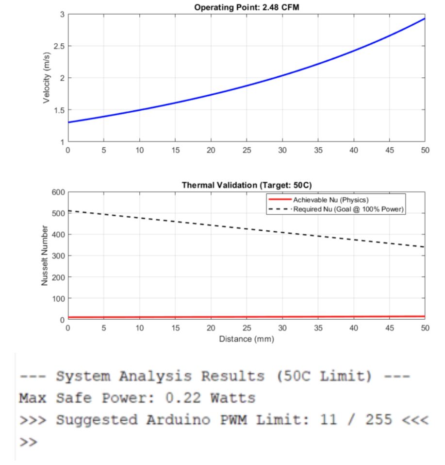

Closed-Loop Thermal Regulation
PID-controlled 18W heat load with iterative convective shroud optimization.
Engineering Objective
Problem Statement
Design and experimentally validate a closed-loop thermal regulation system that maintains a target temperature under an 18W resistive heat load using forced convection and PID feedback. The system had to be fully instrumented, with real-time sensing and actuation, and analyzed against a first-principles heat transfer model.
System Components
- ControllerArduino-based PID
- Heat Source18W resistive load
- SensingNTC thermistor network
- ActuationPWM-driven ducted fan
- ShroudCustom 3D-printed duct
- ElectronicsCustom PCB via KiCad
- DataMATLAB acquisition suite
- CADSolidWorks

Control System
PID Architecture
A discrete PID controller modulates fan speed via PWM to track a temperature setpoint. The control output u(t) drives the fan based on the error between measured and target temperature:
Tuning Challenges
Two implementation problems required explicit engineering solutions. First, fan stiction: below a minimum PWM threshold, the fan does not spin. A PWM floor of 85/255 was enforced to keep the fan in its linear operating region. Second, thermal lag: the heatsink's thermal mass introduces a delay between control output and measured response. Derivative gain was increased to anticipate temperature overshoot and damp the transient response.

Experimental Validation
MATLAB Data Processing
Thermistor voltage was logged via the Arduino serial interface and processed in MATLAB. The instantaneous cooling rate dT/dt was computed using a finite difference approximation to assess real-time thermal response independent of the setpoint:

Thermistor temperature vs PWM output

Differential cooling rate dT/dt
Finding
The dT/dt data revealed that the Mark I shroud produced poor airflow impingement on the heatsink fins. The duct geometry allowed recirculation and bypass, reducing effective convective area. This drove the Mark II redesign.
Mark II
Iterative redesign driven by experimental findings
Shroud Redesign
Design Changes
Three specific changes were made based on the Mark I findings. Heatsink orientation was rotated to align fin channels with the primary airflow direction. Fan-to-heatsink distance was reduced to minimize boundary layer development before impingement. Shroud cross-section was converged toward the exit to increase local air velocity at the fin face.
Heat Transfer Analysis
Shroud geometry was optimized using the Nusselt-Reynolds relationship for internal forced convection. For a converging duct, increasing local velocity V raises Re, which increases Nu and therefore the convective coefficient h:
A MATLAB optimization script swept shroud length and exit area, computing h at each geometry using the Dittus-Boelter correlation for turbulent internal flow. The geometry that maximized h while remaining manufacturable on the FDM printer was selected.


MATLAB shroud length optimization

Maximum supported power output vs geometry
Engineering Takeaways
Convective performance was more sensitive to duct geometry than to PID tuning. Increasing h through better impingement yielded larger temperature reductions than any achievable gain adjustment.
The analytical heat transfer model predicted trends correctly but underestimated losses from recirculation and bypass. Physical testing was required to identify the failure mode and guide the redesign.
Experimental h values differed from the Dittus-Boelter prediction, confirming that heat transfer coefficients must be validated empirically rather than taken from correlation alone.